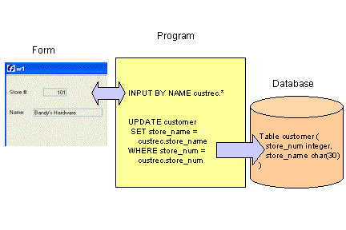

Summary:
This program allows the user to insert/update/delete rows in the customer table. Embedded SQL statements (UPDATE/INSERT/DELETE) are used to update the table, based on the values stored in the program record. SQL transactions, and concurrency and consistency issues are discussed. Prior to deleting a row, a dialog window is displayed to prompt the user to verify the deletion.

The INPUT statement allows the user to enter or change the values in a program record, which can then be used as the data for new rows in a database table, or to update existing rows. In the INPUT statement you list:
INPUT <program-variables> FROM <form-fields>
The FROM clause explicitly binds the fields in the screen record to the program variables, so the INPUT instruction can manipulate values that the user enters in the screen record. The number of record members must equal the number of fields listed in the FROM clause. Each variable must be of the same (or a compatible) data type as the corresponding screen field. When the user enters data, the runtime system checks the entered value against the data type of the variable, not the data type of the screen field.
When invoked, the INPUT statement enables the specified fields of the form in the current BDL window, and waits for the user to supply data for the fields. The user moves the cursor from field to field and types new values. Each time the cursor leaves a field, the value typed into that field is deposited into the corresponding program variable. You can write blocks of code as clauses in the INPUT statement that will be called automatically during input, so that you can monitor and control the actions of your user within this statement.
The INPUT statement ends when the user selects the accept or cancel actions.
INPUT supports the same shortcuts for naming records as the DISPLAY statement. You can ask for input to all members of a record, from all fields of a screen record, and you can ask for input BY NAME from fields that have the same names as the program variables.
INPUT BY NAME <programrecord>.*
By default, field values are buffered. The UNBUFFERED attribute makes the INPUT dialog "sensitive", allowing you to easily change some form field values programmatically during INPUT execution. When you assign a value to a program variable, the runtime system will automatically display that value in the form; when you input values in a form field, the runtime system will automatically store that value in the corresponding program variable. Using the UNBUFFERED attribute is strongly recommended.
The same INPUT statement can be used, with the WITHOUT DEFAULTS attribute, to allow the user to make changes to an existing program record representing a row in the database. This attribute prevents BDL from automatically displaying any default values that have been defined for the form fields when INPUT is invoked, allowing you to display the existing database values on the screen before the user begins editing the data. In this case, when the INPUT statement is used to allow the user to add a new row, any existing values in the program record must first be nulled out.
The values of the program variables that have been input through the form can be used in SQL statements that update tables in a database.
The embedded SQL statements INSERT, UPDATE, and DELETE can be used to make changes to the contents of a database table. If your database has transaction logging, you can use the BEGIN WORK and COMMIT WORK commands to delimit a transaction block, usually consisting of multiple SQL statements. If you do not issue a BEGIN WORK statement to start a transaction, each statement executes within its own transaction. These single-statement transactions do not require either a BEGIN WORK statement or a COMMIT WORK statement. At runtime, the Genero database driver generates the appropriate SQL commands to be used with the target database server.
To eliminate concurrency problems, keep transactions as short as possible.
While your program is modifying data, another program may also be reading or modifying the same data. To prevent errors, database servers use a system of locks. When another program requests the data, the database server either makes the program wait or turns it back with an error. BDL provides a combination of statements to control the effect that locks have on your data access:
SET LOCK MODE TO {WAIT [n]| NOT WAIT }
This defines the timeout for lock acquisition for the current connection. The timeout period can be specified in seconds (n). If no period is specified, the timeout is infinite. If the LOCK MODE is set to NOT WAIT, an exception is returned immediately if a lock cannot be acquired.
Warning: This feature is not supported by all databases. When possible, the database driver sets the corresponding connection parameter to define the timeout. If the database server does not support setting the lock timeout parameter, the runtime system generates an exception.
SET ISOLATION LEVEL TO { DIRTY READ
| COMMITTED READ
| CURSOR STABILITY
| REPEATABLE READ }
This defines the ISOLATION LEVEL for the current connection. When possible, the database driver executes the native SQL statement that corresponds to the specified isolation level.
For portable database programming, the following is recommended:
See Transactions in the BDL Reference Manual for a more complete discussion. The ODI Adaptation Guides provide detailed information about the behavior of specific database servers.
Genero BDL provides some optional control blocks for the INPUT statement that are called automatically as the user moves the cursor through the fields of a form. This allows your program to initialize field contents when adding a new row, for example, or to validate the user's input.
For example:
See the INPUT statement for a complete list of control blocks.
The MENU statement in the module custmain.4gl is modified to call functions for adding, updating, and deleting the rows in the customer table.
| The MAIN block (custmain.4gl) |
|
Notes:
08 sets the lock
timeout period to
6 seconds.12 thru 41
define the main menu of the program.27 thru 30
The MENU option "Add" now calls an inpupd_cust function.
Since this same function will also be used for updates, the value "A",
indicating an Add of a new row, is passed. If inpupd_cust returns
TRUE, the insert_cust function is
called.31 thru 34
The MENU option "Delete" now calls a delete_check function.
If delete_check returns TRUE, the delete_cust function is
called.35 thru
38 are added to the MENU
statement for the
"Modify"
option, calling the inpud_cust function. The value "U", for an Update of a new row, is passed as a
parameter. If inpupd_cust returns TRUE, the update_cust function is
called.A new function, inpupd_cust, is added to the custquery.4gl module, allowing the user to insert values for a new customer row into the form.
| Function inpupd_cust (custquery.4gl) |
|
01 The function accepts a parameter defined
as CHAR(1). In order to use the same function for both the input of a new record and the
update of an existing one, the CALL to this function in the MENU
statement in main.4gl
will pass a value "A" for add, and "U" for update. 06 The variable
cont_ok is a flag to indicate whether the
update operation should continue; set initially to TRUE.08 thru
12 test the value of the parameter au_flag.
If the value of au_flag is "A" the operation is an Add of a new record, and a
MESSAGE is displayed. Since this is an Add, the modular program record values are initialized to NULL
prior to calling the INPUT statement, so the user will have empty
form fields in which to enter data.14 sets the INT_FLAG
global variable to FALSE
prior to the INPUT statement, so the program can determine if the user cancels
the dialog.17 The UNBUFFERED and WITHOUT DEFAULTS clauses of
the INPUT statement are used. The WITHOUT DEFAULTS clause is required since this statement will also be
used for Updates, to prevent the existing values displayed on the form from being erased or replaced with default values.19 thru 38 Each time the value in store_num
changes, the customer table is searched to see if that store_num already exists. If so, the values in the mr_custrec record are
displayed in the form, the variable cont_ok is set
to FALSE, and the
INPUT statement is immediately terminated. 40 thru 44
The AFTER FIELD control block verifies that store_name was not left blank. If so, the NEXT FIELD statement returns the focus to the store_name
field so the user may enter a value.46 END INPUT is required when any of the
optional control blocks of the INPUT statement are used.48 thru
53 The INT_FLAG
is checked to see if the
user has cancelled the input. If so, the variable
cont_ok is set to FALSE, and the
program record mr_custrec
is NULLED out. The UNBUFFERED attribute of the
INPUT statement assures that the NULL values in
the program record are automatically displayed on the form.55 returns the value of cont_ok, indicating
whether the input was successful. A new function, insert_cust, in the custquery.4gl module, contains the logic to add the new row to the customer table.
| Function insert_cust |
|
Notes:
04 thru 14 contain an embedded SQL statement
to insert
the values in the program record mr_custrec into the customer table.
This syntax can be used when the order in which the members of the program
record were defined matches the order of the columns listed in the SELECT
statement. Otherwise, the individual members of the program
record must
be listed separately. Since there is no BEGIN WORK/COMMIT WORK syntax used here, this statement will be
treated as a singleton transaction
and the database driver will automatically
send the appropriate COMMIT statement. The INSERT statement
is surrounded by WHENEVER ERROR
statements.17 thru
21 test the SQLCA.SQLCODE that was returned from
the INSERT statement. If the INSERT was not successful, the corresponding error message
is
displayed to the user.Updating an existing row in a database table provides more opportunity for concurrency and consistency errors that inserting a new row. Using the following techniques can help to minimize these errors.
A work record and a local record, both identical to the program record, are defined to allow the program to compare the values.
To explicitly lock a database row prior to updating, a SELECT ... FOR UPDATE statement may be used to instruct the database server to lock the row that was selected. SELECT ... FOR UPDATE cannot be used outside of an explicit transaction. The locks are held until the end of the transaction.
Like many programs that perform database maintenance, the Query program uses a SCROLL CURSOR to move through an SQL result set, updating or deleting the rows as needed. BDL cursors are automatically closed by the database interface when a COMMIT WORK or ROLLBACK WORK statement is performed. To allow the user to continue to scroll through the result set, the SCROLL CURSOR can be declared WITH HOLD, keeping it open across multiple transactions.
The module has been modified to define a work_custrec record that can be used as working storage when a row is being updated.
| Module custquery.4gl |
|
Notes:
04 thru
15 define a work_custrec record that is modular in scope and
contains the identical structure as the mr_custrec program
record.The function inpupd_cust in the custquery.4gl module has been modified so it can also be used to obtain values for the Update of existing rows in the customer table.
| Function inpupd_cust (custquery.4gl) |
|
Notes:
05
sets the work_custrec program
record to NULL.10 For an Add, the mr_custrec
program
record is set equal to the work_custrec record, in effect setting mr_custrec
to NULL. The LET statement uses less resources than
INITIALIZE.
13 For an Update, the values in the mr_custrec program
record are copied into work_custrec, saving them for comparison later.
21 thru
24 A BEFORE FIELD store_num clause has been added to the INPUT
statement. If this is an Update, the user should not be allowed to
change store_num, and the NEXT FIELD
instruction moves the
focus to the store_name field. 26 The ON CHANGE
store_num control block, which will only
execute if the au_flag is set to "A" (the operation is an Add)
remains the same. 28 The AFTER
FIELD store_name control block remains the same, and
will execute if the operation is an Add or an Update.A new function update_cust in the custquery.4gl module updates the row in the customer table.
| Function update_cust (custquery.4gl) |
|
Notes:
02 thru
12 define a local record, l_custrec with
the same structure as the modular program
records mr_custrec and work_custrec.15 The cont_ok variable
will be used as a
flag to determine whether the Update should be committed or rolled back.17 Since this will be a multiple-statement transaction, the
BEGIN WORK
statement is used to start the transaction.19 thru
30 use the store_num value in the program
record to re-select the row. FOR UPDATE locks the database row until the transaction
ends.32 thru
34 check SQLCA.SQLCODE
to make sure the record
has not been deleted by another user. If so, an error message
is displayed, and the
variable cont_ok is set
to FALSE.36 thru
60 are to be executed if the
database row was found.36 compares the values in
the l_custrec local record with the work_custrec record that
contains the original values of the database row. All the values must
match for the condition to be TRUE.37 thru
55 are executed if the values matched. An embedded
SQL statement
is used to UPDATE the row in the customer table using the values which the
user has previously entered in the mr_custrec program
record. The SQL
UPDATE statement is surrounded by WHENEVER ERROR
statements. The SQLCA.SQLCODE
is checked after the UPDATE, and if it indicates the
update was not successful the variable
cont_ok is set to FALSE
and an error message
is displayed.57 through
59 are executed if the values in l_custrec and work_custrec
did not match. The variable
cont_ok is set to FALSE. The values in the mr_custrec
program record are set to the values in the l_custrec record (the current
values in the database row, retrieved by the SELECT .. FOR UPDATE
statement.) The UNBUFFERED attribute of the INPUT statement
assures that the values will be automatically displayed in the form. A message
is displayed indicating the row had been changed by another user.63 thru
67 If the variable
cont_ok is TRUE
(the
update was successful) the program issues a COMMIT WORK
to end the transaction
begun on Line
278. If not, a ROLLBACK WORK
is issued. All locks placed on the database
row are automatically released.The SQL DELETE statement can be used to delete rows from the database table. The primary key of the row to be deleted can be obtained from the values in the program record.
The MENU statement has an optional STYLE attribute that can be set to 'dialog', automatically opening a temporary modal window. You can also define a message and icon with the COMMENT and IMAGE attributes. This provides a simple way to prompt the user to confirm some action or operation that has been selected.
The menu options appear as buttons at the bottom of the window. Unlike standard menus, the dialog menu is automatically exited after any action clause such as ON ACTION, COMMAND or ON IDLE. You do not need an EXIT MENU statement.
Function delete_check is added to the custquery.4gl module to check whether a store has any orders in the database before allowing the user to delete the store from the customer table. If there are no existing orders, a dialog MENU is used to prompt the user for confirmation.
| Function delete_check (custquery.4gl) |
|
Notes:
02 defines a variable
del_ok to be
used as a flag to determine if the Delete should continue.05 sets del_ok to FALSE.07 thru 10 use the store_num value in the mr_custrec
program
record in an
SQL statement
to determine whether there are orders in the database for that store_num. The
variable
ord_count is used to store the value returned by the
SELECT statement.12 thru 13 If the count is greater than zero, there are
existing rows in the orders table for the store_num. A
message
is displayed to the user. del_ok remains set to FALSE.15 thru
21 If the count is zero, the Delete can
continue. A
MENU statement is used to prompt the user to confirm the
Delete action. The STYLE attribute is set to "dialog" to automatically display
the
MENU in a modal dialog window. If the user selects "Yes", the
variable del_ok is set to
TRUE. Otherwise a
message is displayed to the user indicating the
Delete
will be canceled.24 returns the value of del_ok to the delete_cust
function.The function delete_cust is added to the custquery.4gl module to delete the row from the customer table.
| Function delete_cust (custquery.4gl) |
|
Notes:
04 and
05 contains an embedded SQL DELETE statement that
uses the store_num value in the program
record mr_custrec to delete the
database row. The SQL statement is surrounded by WHENEVER ERROR
statements. This is
a singleton transaction that will be automatically
committed if it is
successful.07 thru
12 check the SQLCA.SQLCODE
returned for the SQL
DELETE statement. If the DELETE was successful, a message is displayed and the
mr_custrec program
record values are set to NULL
and automatically displayed on the form.
Otherwise, an error message is displayed.